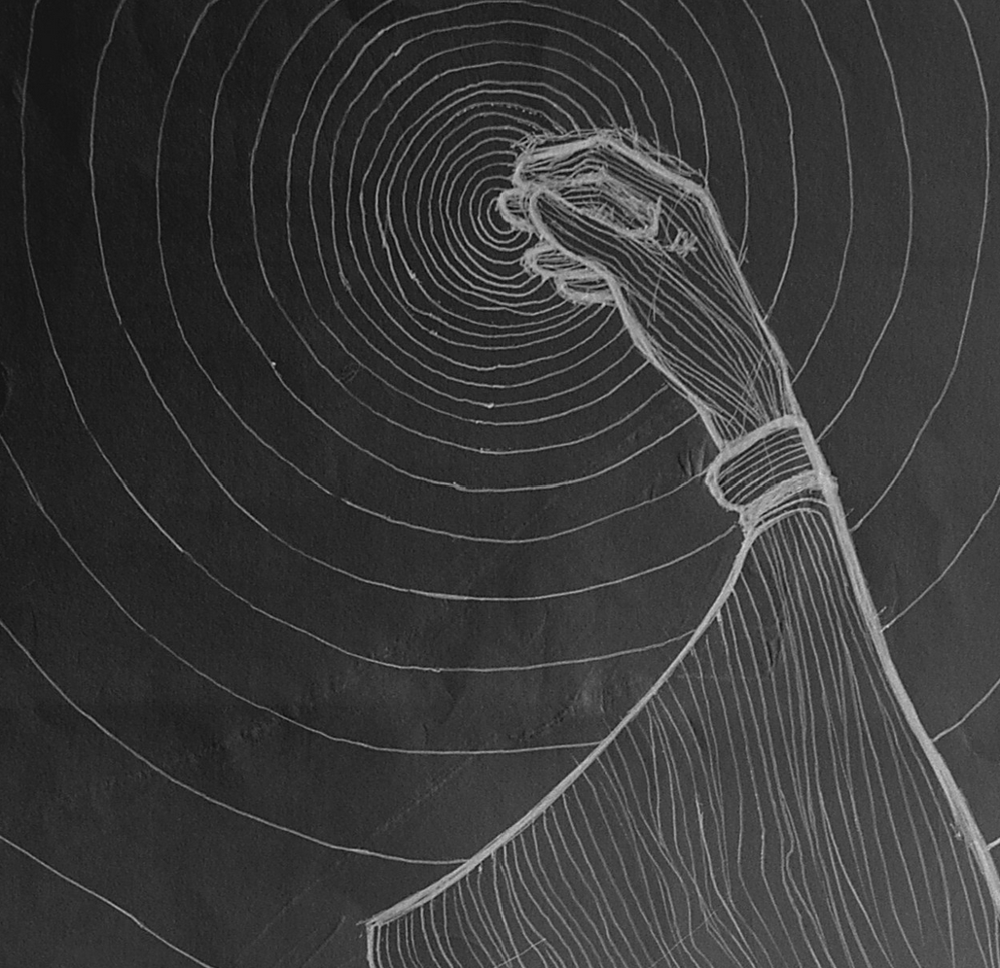
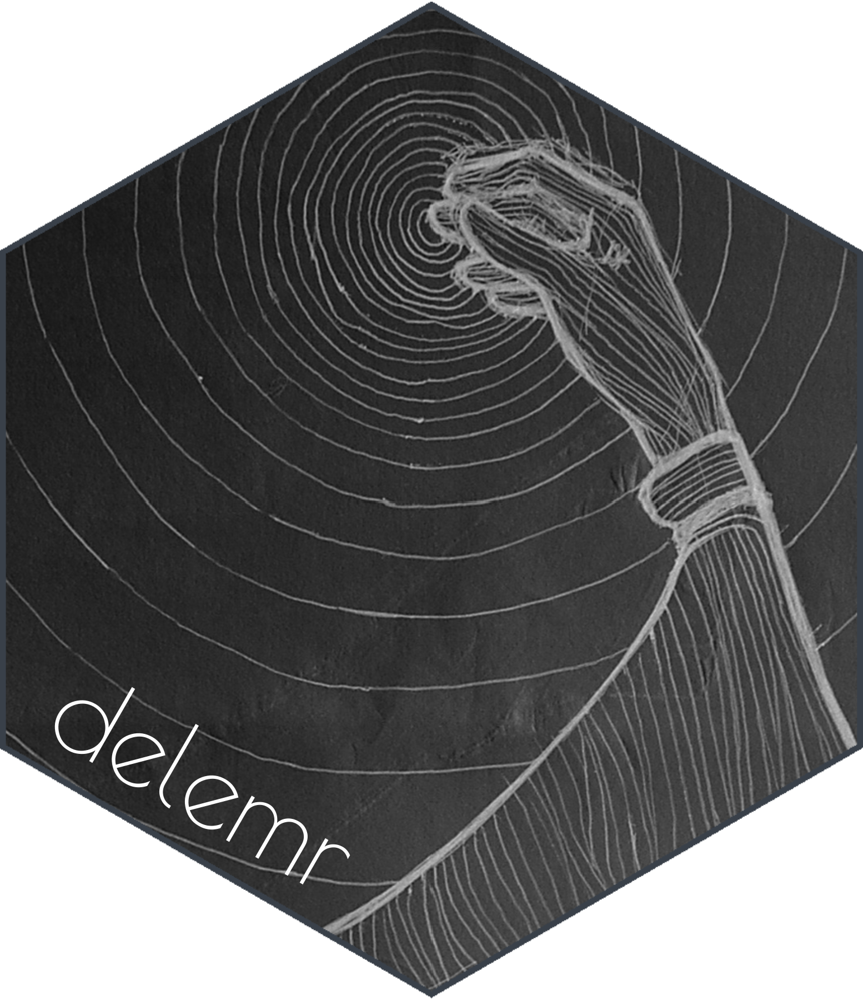

Quick article to document the process of creating a sticker for this
package (which I initially did for fun and learning purposes). I use the
pacman package in my setup to conveniently check “if
installed”/install/load the necessary packages, all in one go.
if (!requireNamespace("pacman", quietly = TRUE)) {
install.packages("pacman")
}
pacman::p_load(
# cropcircles, # to crop the image in a hexagonal shape
ggplot2,
ggpath, # to read the images directly from the paths
here, # to use relative paths
knitr, # to include the images in the article
showtext, # to use a custom font
sysfonts # to use a custom font
)
# cropcircles is commented because it has a weird interference with GHAIt all starts with a little square shaped drawing of mine, named
delemr_drawing.png.
image_path <- "delemr_drawing.png"
stick_path <- "delemr_sticker.png" # our eventual sticker
knitr::include_graphics(image_path)
Time to build the sticker.
- I used the
hex_crop()function to crop the image in a hexagonal shape, with a border of a specified color and size. I had to dug a bit to find the exact grey-blue colour of the GitHub website lines to use as the border colour for a cool “merging with the background” effect. - I used a custom font to write the package name on the sticker,
namely “Poiret One” font from Google Fonts. I loaded it with
sysfonts::font_add_google()andshowtext::showtext_auto(). - I used
ggplot2to plot the cropped image and the package name on top of it, angled and styled usingggplot2::annotate(). I usedggplot2::theme_void()to remove everything besides the image. - I saved the sticker with
ggplot2::ggsave()and the appropriate dimensions.
raw_cropped <- hex_crop(
images = image_path,
border_colour = "#394049",
border_size = 7
)
font <- "Poiret One"
font_add_google(font)
showtext_auto()
# building the sticker
p <-
ggplot() +
geom_from_path(aes(.5, .5, path = raw_cropped)) +
annotate(
"text",
x = .24,
y = .22,
label = "delemr",
color = "white",
family = font,
size = 54,
angle = -30
) +
scale_x_continuous(limits = c(0, 1), expand = c(0, 0)) +
scale_y_continuous(limits = c(0, 1), expand = c(0, 0)) +
theme_void()
# saving it
ggsave(
filename = stick_path, plot = p,
width = 5.18, height = 6,
dpi = 300
)
knitr::include_graphics(stick_path)
Now to use the sticker as a package logo, it needs to be a bit
smaller, and this is conveniently taken care of by the
usethis::use_logo() function.
usethis::use_logo(stick_path)Done!